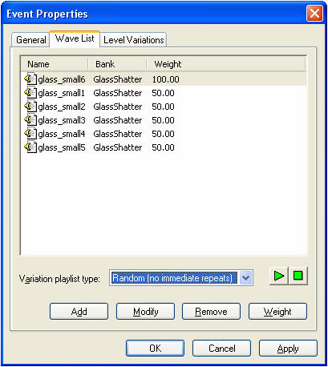
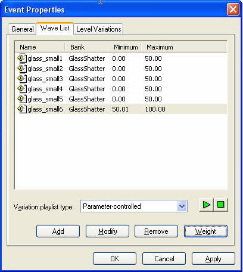
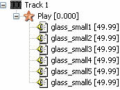
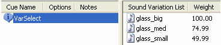
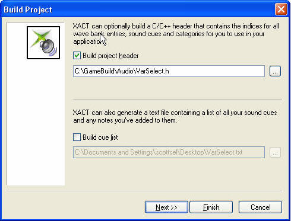
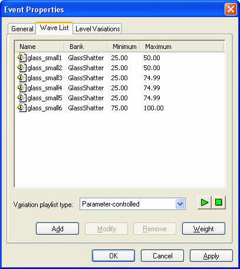
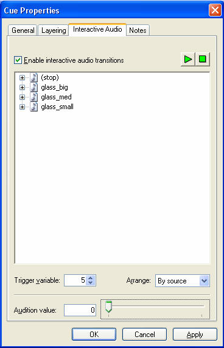

By Scott Selfon, Audio Content Consultant, Content and Design Team, Xbox Advanced Technology Group
The Audio Creation Tool for the Microsoft® Xbox® (XACT) provides numerous opportunities for composers and sound designers ("content creators") to add variation to their audio content. For instance, waves can be played with randomized pitch and volume, or a cue can choose among multiple sounds using weighted variation while keeping track of which variations have not yet been played. These styles of nonrepetitive playback are typically handled by the XACT engine and do not require any programmer implementation. However, there are many scenarios where variation needs to be more directly controlled based on game state or programmatic requirements. This paper details several techniques that allow a programmer to control, at run time, how variations are selected:
Depending on how programmer-selectable content is intended to be, the content creator may need to author it with selectability in mind. This approach reflects the overall XACT philosophy of division of responsibilities and also its philosophy of avoiding multiple avenues for performing the same function. For the general case where a programmer simply wants to play a cue, the content creator can specify whether variations should be shuffled, played without repeats, and so on.

Illustration A play event with six wave variations. The content creator has specified that one variation has its selection probability weighted twice as heavy as the others. The play event is also set to never pick the same wave twice.
Remember that XACT provides selection-style variation on two levels:
In situations where a particular sound or wave to be played needs to react to game state data, the content creator sets up the cue to allow the programmer to control variation selection. In this case, the content creator gives up some or all of the control as to how variations are chosen.

Illustration When the Variation playlist type is set to Parameter-controlled, the programmer specifies a weight to use when playing this sound. The sound then looks through its list of waves to find a random wave that falls within that weight range. In the above example, if the parameter passed in is between 0 and 50, one of the waves glass_small1 through glass_small5 is chosen. If the parameter passed in is between 50.01 and 100, glass_small6 is always chosen.
Several common scenarios where parameter-controlled variation selection might reflect game state data include:
Note A single RPC cannot control both variation selection and the kinds of pitch, volume, and filter curves discussed in the white paper An Introduction to XACT Interactive Audio Features. However, multiple RPCs can be specified on a single sound.
Lastly, in some cases, the programmer will want to avoid weighting entirely and select a specific sound or wave to play. In these cases, the programmer can simply ignore the variation options (parameter-controlled or otherwise) and specifically tell the XACT engine to choose a particular variation by index. As we will see, determining how sounds or waves are indexed presents some challenges.
The IXACTSoundBank::SelectVariation method can be used to choose which sound or wave to play based on index or weight. We first discuss choosing a variation by index. The index in this case is relative to the list of variations, not the global list of sounds or waves. That is, the index is a value in the range from zero to the number of variations for this cue or play event minus one.

Illustration Even though these waves may be at various indices in the source wave bank, the indices for variation selection are going to be 0-5. The programmer uses the XACT_FLAG_SELECT_VARIATION_WAVE_INDEX flag and fills the Wave.dwIndex member of the XACT_SOUNDBANK_SELECT_VARIATION structure with the requested index.

Illustration A cue with sound variations (rather than a single sound with wave variations). Here, the programmer uses the XACT_FLAG_SELECT_VARIATION_SOUND_INDEX flag and the Sound.dwIndex member, with a value of 0-2.
The natural question is: "What's the indexed order for my sounds or waves?" The XACT user interface can sort the values based on name, weight, and so on, which is not an accurate representation of the values' indices. To determine the order in which sounds or waves are indexed, the programmer should use the header file that can be generated when building an XACT project.

Illustration Building a project header file.
Opening the header file reveals information about the wave bank and sound bank structures, and more important for us, the indexed listings of all variations. For the two examples above, we find entries similar to this:
typedef enum
{
XACT_SOUNDBANK_VARSELECTDEMO_CUE_VARSELECT_SOUND_GLASS_BIG = 0,
XACT_SOUNDBANK_VARSELECTDEMO_CUE_VARSELECT_SOUND_GLASS_MED = 1,
XACT_SOUNDBANK_VARSELECTDEMO_CUE_VARSELECT_SOUND_GLASS_SMALL = 2,
} XACT_SOUNDBANK_VARSELECTDEMO_CUE_VARSELECT_SOUND;
#define XACT_SOUNDBANK_VARSELECTDEMO_CUE_VARSELECT_SOUND_COUNT 3
typedef enum
{
XACT_SOUNDBANK_VARSELECTDEMO_SOUND_GLASS_SMALL_TRACK_0_WAVE_GLASS_SMALL6 = 0,
XACT_SOUNDBANK_VARSELECTDEMO_SOUND_GLASS_SMALL_TRACK_0_WAVE_GLASS_SMALL1 = 1,
XACT_SOUNDBANK_VARSELECTDEMO_SOUND_GLASS_SMALL_TRACK_0_WAVE_GLASS_SMALL2 = 2,
XACT_SOUNDBANK_VARSELECTDEMO_SOUND_GLASS_SMALL_TRACK_0_WAVE_GLASS_SMALL3 = 3,
XACT_SOUNDBANK_VARSELECTDEMO_SOUND_GLASS_SMALL_TRACK_0_WAVE_GLASS_SMALL4 = 4,
XACT_SOUNDBANK_VARSELECTDEMO_SOUND_GLASS_SMALL_TRACK_0_WAVE_GLASS_SMALL5 = 5,
} XACT_SOUNDBANK_VARSELECTDEMO_SOUND_GLASS_SMALL_TRACK_0_WAVE;
#define XACT_SOUNDBANK_VARSELECTDEMO_SOUND_GLASS_SMALL_TRACK_0_WAVE_COUNT 6
Notice that the order isn't necessarily what we expected (in this case, I had created the sound initially to use only Glass_Small6, and only later added Glass_Small1 through Glass_Small5). Nonetheless, we can now accurately map our source waves to indices in the cue and select the specific one we want to use.
In addition to selection by index, IXACTSoundBank::SelectVariation can be used to select a wave by weight. Here, the content creator defines weight ranges for wave or sound variations (or both), the programmer calls for a particular weight, and a random sound whose weight range matches that weight is selected.
Although the functionality here is nearly identical to that for the IXACTEngine::SetParameterControl method, the use of IXACTSoundBank::SelectVariation gives the programmer the advantage of being able to query a cue (using the IXACTSoundBank::GetSoundCueProperties method) to discover which variation has actually been chosen before the cue has started playing. When using IXACTEngine::SetParameterControl, querying for the chosen variation cannot be done until the cue instance has started playing.
The valid weight value range is somewhat confusing because it is exposed differently to the content creator than to the programmer, as shown below.
| Content Creator | Programmer | |
|---|---|---|
| Minimum wave weight value | 0.00 | 0.00 |
| Maximum wave weight value | 100.00 | 1.00 |
Typically, the specific information about which sound or wave variation maps to which weight range does not need to be communicated; the programmer simply requests a variation at the appropriate weight, and the content creator provides variations covering the entire weight range. Conversely, if the content creator decides to go back and add additional variations, or adjust the weight ranges, the programmer does not typically have to change code. However, if you do need to communicate weight ranges, just make sure the programmer effectively divides the content creator's numbers by 100 to match the coded weight range of 0–1.0.
One warning—if any portion of a weight range is not covered by any variations, XACT throws an error here (unlike in variation selection through run-time parameter control or interactive audio cues, where silence is a legitimate variation to play):
XACTENG: XACT::CSoundBank::SelectVariation: Error: No sound variation was selected or the cue has no sound
When using SelectVariation to control variation choice, make sure that either the entire range (0.00–100.00) is covered by content or the programmer is instructed to not use values outside of the valid range.

Illustration In this case, the programmer should not call SelectVariation with a value of less than .25 (remember, the programmer divides 25.00 by 100 for conversion).
For the example above, the programmer uses XACT_FLAG_SELECT_VARIATION_WAVE_VALUE in the call to SelectVariation, and then fills Wave.flValue as shown below.
| Wave.flValue | Behavior |
|---|---|
| 0.00<=flValue<0.25 | Error—XACT halts |
| 0.25<=flValue<=0.50 | Randomly choose among glass_small1–glass_small5 |
| 0.50<=flValue<0.75 | Randomly choose among glass_small3–glass_small5 |
| 0.75<=flValue<=1.0 | Always play glass_small6 |
Again, rather than subject the game to XACT halting, typically the content creator should make sure to provide variations covering the entire range of weight values.
Using run-time parameter controls (RPCs, also known as "sliders") to control variation selection has already been covered in a separate white paper, An Introduction to XACT Interactive Audio Features. Here, we will briefly touch on how the programmer works with this functionality. The XDK sample XACTParamControl provides a sample code demonstration of how a programmer might interact with one specific RPC control.
As with IXACTSoundBank::SelectVariation, the weight range for IXACTEngine::SetParameterControl is 0–1.0, corresponding to 0.00–100.00 for the content creator. Again, remember that the content creator needs to author sound or wave variations such that the Parameter-controlled option is selected for Variation playlist type.
Variation selection through RPCs uses special predefined sliders attached to all cues that have sound variation, or all play events that have wave variation:
#define XACT_PARAMETER_CONTROL_SOUND_VARIATION "=SoundVariation" #define XACT_PARAMETER_CONTROL_WAVE_VARIATION "=WaveVariation"
There are two primary differences between IXACTSoundBank::SelectVariation and IXACTEngine::SetParameterControl:
A much more straightforward method for choosing variations for run-time parameter controlled cues than that provided by SetParameterControl is embedded in the extended versions of the Play and Prepare methods, the IXACTSoundBank::PlayEx and IXACTSoundBank::PrepareEx methods. Here, you can choose variations without having to manage cue instances. The IXACTSoundBank::PlayEx process is as follows:
Interactive audio cues have been covered in great detail in a separate white paper, An Introduction to XACT Interactive Audio Features. While not generally used for programmer-determined variation selection of foreground sound effects, interactive audio cues can certainly be used for choosing among more ambient or musical sounds. Here, we touch briefly on programmers' interaction with interactive audio cues. The XDK sample XACTInteractiveAudio provides a more complete sample code demonstration of how a programmer might interact with one specific interactive audio cue.
Unlike run-time parameter controls, interactive audio cues are driven by global trigger variables set by the programmer. Although this approach means that many cues can respond to a single variable change, a very attractive feature for making large numbers of sounds controllable with a single call, interactive audio cues typically should not have multiple playing instances. However, multiple independent interactive audio cues are perfectly acceptable (so long as they do not interfere with each other's sound layers, in which case they would interrupt and stop each other).
Each interactive audio cue can respond to one of the 32 predefined global trigger variables that can be adjusted using the IXACTEngine::SetVariable method. The content creator sets which variable a particular cue responds to.

Illustration This cue will respond to the global trigger variable 5. The sound designer can simulate changes to this variable by moving the slider at the bottom of the window.
There are several key differences between global trigger variables and typical run-time parameter controls:
Once an appropriate variation is chosen, the programmer can go ahead and trigger the cue as with any other cue. If you want the cue instance to play with zero latency (that is, to start playing as soon as the cue is triggered), you can call IXACTSoundBank::Prepare on it. For a cue whose variation has been selected using IXACTSoundBank::SelectVariation, a subsequent call to Prepare using the XACT_FLAG_SOUNDCUE_PRIME flag primes the proper variation. Incidentally, the next call to Prepare returns to the default variation selection behavior (typically, choosing a new variation) unless SelectVariation is called again.
This functionality becomes somewhat more confusing when using IXACTEngine::SetParameterControl, since before triggering the cue you need to call Prepare in order to set the parameter control on the cue instance. The preferred method for proper variation selection and priming is demonstrated in the XACTParamControl sample in the Xbox Development Kit. Specifically, the steps to take are:
Again, for sounds that you don't worry about priming prior to playing, use IXACTSoundBank::PlayEx to make the process much simpler.
While purely random or content-driven variation selection is very effective, many game scenarios remain where the game state needs to intervene to help select the most effective sound effect to play. Variation selection allows the programmer to force the playback of a particular wave or sound by index, or to perform a more abstracted selection of an appropriate wave or sound by weight. Global trigger variables can also be used, in somewhat more restricted cases, to choose an appropriate sound to play based solely on weight.
For more information about topics presented here, please consult the Xbox Audio Best Practices Guide, the XDK documentation, and the white papers in the Audio Designer's Corner, or send an e-mail message to xboxds@xbox.com.